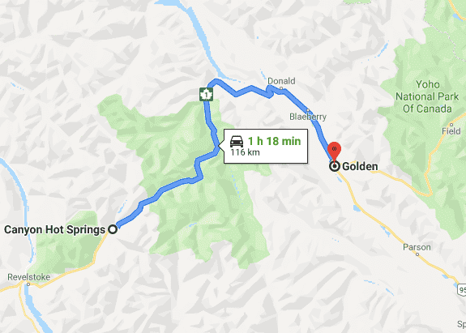

I spent the morning in the hot pool and enjoyed the view of the white peaked mountains. Around 1000 I set out back on the road and soon after I met an older couple of bicyclists coming from Montreal (everyone is from Montreal). I talked to them for a short bit and then biked past them. They were hoping to make it to Banff in time for Canada day. I also had similar aspirations as I wanted to see the fireworks! I wasn't sure how far I would make it but was hopeful.
I soon reached Rogers Pass. In the other blogs this pass was made to seem difficult legendary - it wasn't really (compared to my ride to Princeton). Just another day biking in BC: uphill, downhill and a bit of flat land. The view was nice, but the clouds hid some of the peaks from me.
It felt good working up the hills - slow, steady and covering distance. However, soon I got my second flat of the trip. First your ears pick up a strange sound and you are confused and moments later as the air has escaped through the tube you feel the vibration and acquire the sinking realization that you've got a flat. I pulled over to fix things before the rain kicks in. My pump did not have have a flexible tube connecting the pump body to the valve. In addition, the pump required a lot of effort to get to 110psi once I was past 60. After spending a lot of effort pumping up the new inner tube I realized that one part of my tire was not properly fit onto the rim - time to deflate all that hard work! I pumped up the inner tube again but the the lack of the tube combined with the impatient pumping caused a rip to form near the valve of the inner tube. Time to inflate again. Three's a charm.
I stopped at Golden Municipal campground where there were many tourists. The city has a beautiful wall of mountains protecting it. At the campground, I saw a lot of bicyclists. Some of them looked like solo/couple riders, but there was a large group that was biking together across Canada. This large group (around 20) had a van with them that carried their stuff (tents, sleeping bags...) from destination to the next destination while they biked on their bikes. Most of the group members were seniors (if not all).
